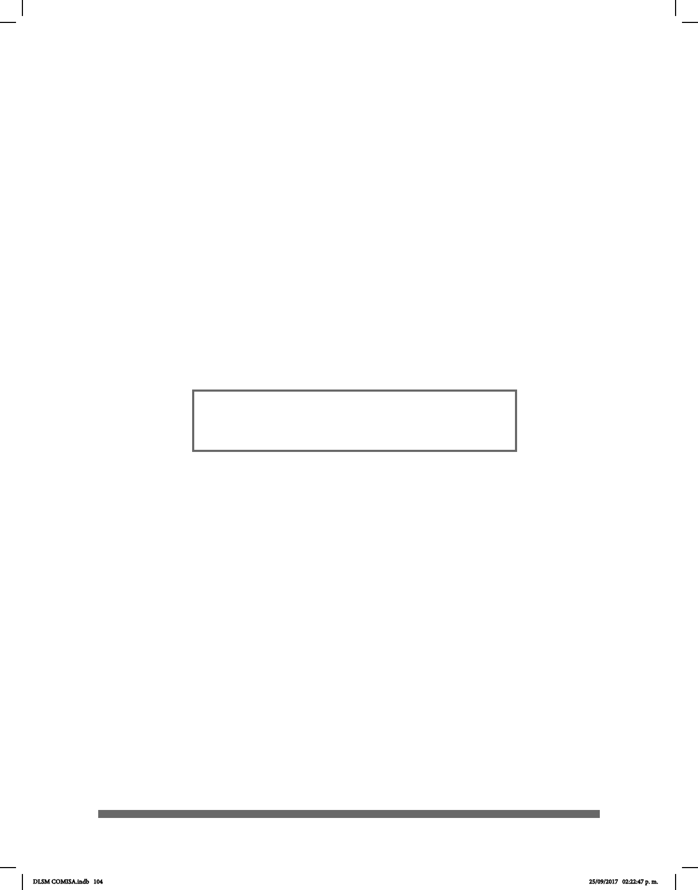

104
Para su correcta realización, es importante conocer:
• La o las conguraciones utilizadas al inicio de la seña, la orientación del cuerpo
en relación con el espacio, la orientación de las palmas desde el punto de vista del
señante. En algunas señas, la conguración manual, la orientación de la mano o su ubicación
tienen un punto de inicio y un punto de término.
• Las conguraciones de las manos que se mantienen y la manera en que se colocan
entre sí, además de la ubicación de dichas conguraciones en el cuerpo o en el espacio.
• La descripción del movimiento involucrado en el proceso de articulación.
Ejemplo de oraciones:
El siguiente cuadro muestra cómo aparecen los ejemplos de oraciones en el DLSM.
Primero aparece la glosa en LSM; después, su traducción al español.
_______________________________________o.i.g.
ABUELA-izq CACEROLA ARROZ COCINAR
¿Mi abuela cocinó arroz en la cacerola?
Debido a que la estructura gramatical de la LSM es distinta a la del español, además
de la glosa, se utiliza una transcripción, por ejemplo, o.i.g., -izq. El signicado de estas
transcripciones se encuentra en el apéndice 1.
Para los lectores que deseen profundizar en el uso de la LSM, se recomienda que lo
hagan mediante el contacto directo con personas sordas uentes y competentes en
esta lengua.
DLSM COMISA.indb 104 25/09/2017 02:22:47 p. m.